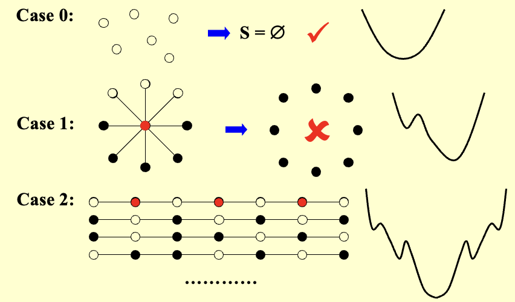
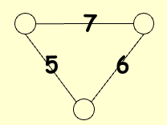

局部搜索¶
- 定义
- 局部性
- 在可行解集中定义邻域
- 局部最优解是邻域中的最优解
- 搜索
- 从一个可行解开始，并在其邻域中搜索更好的解
- 当无法进一步改进时，即达到局部最优解
- 邻居关系
- \(S \sim S'\) ：\(S'\) 是 \(S\) 的邻居解（ \(S'\) 可以通过对 \(S\) 进行微小的修改得到）
- \(N(S)\) ：\(S\) 的邻域——集合 \(\{ S': S \sim S' \}\)
梯度下降算法¶
-
定义：梯度下降（在局部搜索中）是一种贪心改进策略，通过不断移动到当前解的最优邻域解来寻找局部最优解
-
代码
| C | |
|---|---|
顶点覆盖问题¶
- 问题：给定一个无向图 \(G=(V,E)\) ，找到一个最小的顶点集合 \(S\) ，对于每条边，至少有一个顶点在集合中
相关定义
- 可行解集 \(\mathcal{FS}\)：所有能覆盖图中每条边的顶点子集
- 成本函数：\(cost(S) = |S|\)
- 邻居关系 \(S \sim S'\)：\(S'\) 可以通过在 \(S\) 中添加或删除一个节点得到
- 每个顶点覆盖 \(S\) 最多有 \(|V|\) 个邻居
- 搜索过程：从 \(S = V\) 开始，删除一个节点并检查 \(S'\) 是否是一个成本更小的顶点覆盖，如果是，直接应用
warning
有的情况下，无法得到局部最优解

改进：Metropolis 算法¶
引入概率:
其中定义常量：
- \(k\)：玻尔兹曼常数（理论中用，算法中常取 1）
- \(T\)：温度参数，控制接受较差解的概率
模拟退火算法¶
Simulated Annealing：材料从高温开始，非常缓慢地冷却，使其有足够时间在一系列逐步降低的中间温度下达到平衡
霍普菲尔德神经网络¶
- 问题：图 \(G = (V, E)\) 具有整数边权重 \(w\)（可为正或负）
- 若 \( w_e < 0 \)，其中 \(e = (u, v)\)，则 \(u\) 和 \(v\) 需要处于相同状态（+1/-1）
- 若 \( w_e > 0 \)，则 \(u\) 和 \(v\) 需要处于不同状态
- 绝对值 \( |w_e| \) 表示该要求的强度
- 输出：网络的一个配置 \(S\) ——每个节点 \(u\) 的状态 \( s_u \) 分配
Warning
可能不存在满足所有边要求的配置，只需要寻找一个足够好的配置。

- 相关定义
- 在配置 \(S\) 中，边 \(e = (u, v)\) 是好边，如果 \(w_e s_u s_v < 0\)（即当且仅当 \(w_e < 0\) 时 \(s_u = s_v\) ）；否则是坏边
-
在配置 \(S\) 中，节点 \(u\) 是满足的，如果与其关联的好边的权重之和 \(\geq\) 与其关联的坏边的权重之和
\[ \sum_{v: e = (u, v) \in E} w_e s_u s_v \leq 0 \] -
如果所有节点都满足，则该配置是稳定的
- 状态翻转算法
| C | |
|---|---|
-
断言 1：状态翻转算法最多在 \(W= \sum_{e} |w_e|\) 次迭代后终止于一个稳定配置
证明
考虑进展度量
\[ \Phi(S) = \sum_{e 是好边} |w_e| \]当节点 \( u \) 翻转状态（\( S \) 变为 \( S' \)）时：
- 所有与 \( u \) 相关的好边变为坏边
- 所有与 \( u \) 相关的坏边变为好边
- 所有其他边保持不变
\[ \Phi(S') = \Phi(S) - \sum_{\begin{array}{c} e:e=(u,v)\in E \\ e 是坏边 \end{array}} |w_e| + \sum_{\begin{array}{c} e:e=(u,v)\in E \\ e 是好边 \end{array}} |w_e| \]显然 \(0 \leq \Phi(S) \leq W\)
-
断言 2：在状态翻转算法中，任何最大化 \(\Phi\) 的局部极大值都是一个稳定配置
最大割问题¶
- 问题：给定一个具有正整数边权重 \(w_e\) 的无向图 \(G = (V, E)\)，寻找一个节点划分 \((A, B)\)，使得跨越割的边的总权重最大化
note
是霍普菲尔德神经网络问题的一个特殊情况，所有边的权重都是正数
-
简单应用示例：\( n \) 个活动，\( m \) 个人，每个人希望参加其中两个活动，将每个活动安排在上午或下午，以最大化能够同时参加两个活动的人数
-
断言：设 \((A, B)\) 是一个局部最优划分，\((A^*, B^*)\) 是全局最优划分，那么 \(w(A, B) \geq \frac{1}{2} w(A^*, B^*)\)
证明
由于 \((A, B)\) 是局部最优划分，对于任意 \(u \in A\)
对所有的 \(u \in A\) 求和
类似地
因此
Warning
- 最坏时间复杂度：可能为 \(O(W)\) 次翻转
- 如果边的权重很大，可能不是多项式时间算法
- 大改进翻转：仅选择翻转后能至少将割值增加 \(\frac{2\varepsilon}{|V|} w(A,B)\) 的节点
-
断言 1：大改进翻转算法终止时返回的割 \((A, B)\) 满足
\[ (2 + \varepsilon) w(A, B) \geq w(A^*, B^*) \] -
断言 2：大改进翻转算法最多在 \(O(n/\varepsilon \log W)\) 次翻转后终止
- 更好的局部搜索
- 解的邻域应足够丰富，以避免陷入不良的局部最优解
- 但是解的邻域不应太大，保证能够高效地搜索邻域以找到可能的局部移动
- k-L heuristic 算法
- 第1步：尽可能优化单次翻转 \(O(n)\)
- 第k步：对未标记节点尽可能优化单次翻转 \(O(n-k+1)\)
- 邻域大小：\(n-1\) 个候选解
- 时间复杂度：\(O(n^2)\)